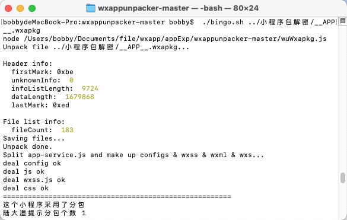
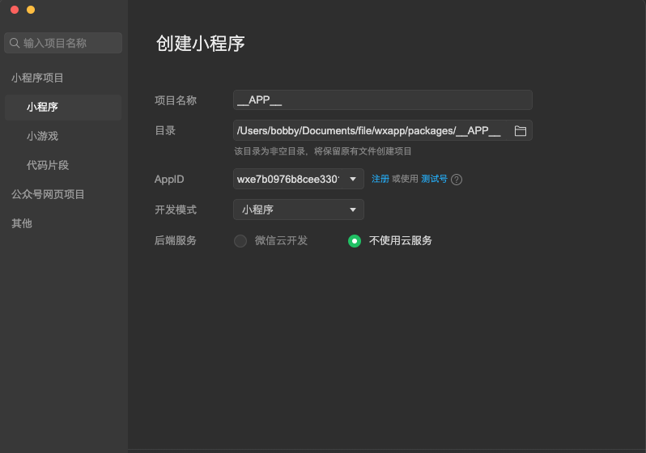
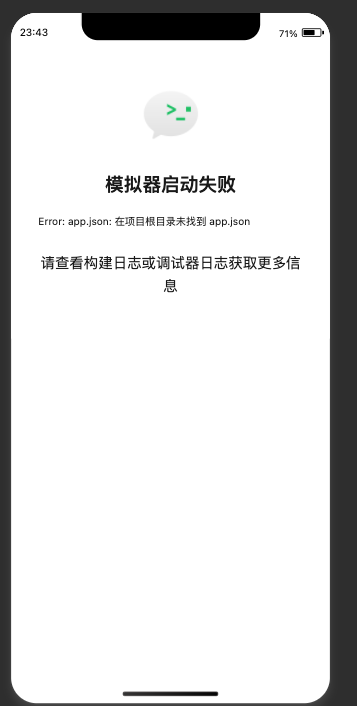
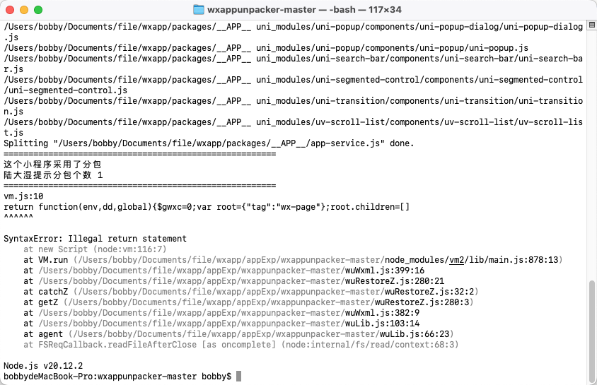

背景
小程序由于其独特的属性,无法如web浏览器应用可通过浏览器开发者控制台检查js文件.无法直接进行逆向解密,于是有大佬开发出源码解密工具 wxappunpacker ,此工具可以通过在pc微信打开小程序,解密本地的小程序文档,还原出小程序的开发代码,可找到源码逻辑进行分析逆向.当然,此工具对于有的小程序可能解密也是不够彻底的,这个到时候出现了情况可寻找其他解决办法
工具安装
- 安装node.js
安装 node
brew install node
配置npm淘宝源
npm config set registry https://registry.npm.taobao.org
npm install esprima
npm install css-tree
npm install cssbeautify
npm install vm2
npm install uglify-es
npm install js-beautify
npm install escodegen
- 下载wxappunpacker包
- 微信开发者工具安装
- 下载地址
反编译工具安装包:链接：https://pan.baidu.com/s/1CsXCCPV5Yipdq8uR44Xf_A?pwd=ilb9
提取码：ilb9
node.js环境(建议选.msi版本无需配置环境变量)：https://nodejs.org/zh-cn/download
微信开发者工具：https://developers.weixin.qq.com/miniprogram/dev/devtools/download.html
一键反编译工具(嫌反编译麻烦下这个)：链接：https://pan.baidu.com/s/12S0ZTkYAFWYfui7ujjrijw?pwd=tzuq
提取码：tzuq
macos 好像也可以使用MacWXAPKGDecrypt这个工具,没试过,地址为:
https://blog.csdn.net/gitblog_00073/article/details/137101334
开始解密小程序文件
- 找到小程序在本地保存的位置
mac的微信保存文件地址一般在:
/Users/<UserName>/Library/Containers/com.tencent.xinWeChat/Data/.wxapplet/packages
windows一般查看文件保存位置即可,这里使用mac开发环境学习记录
- 清理小程序保存文件夹,因为在pc端每次进入一个小程序在此文件夹会生成小程序的相关文件.这里为了方便定位小程序包,可以选择清理文件再出现打开小程序,更加直观的找到需要操作的小程序,也可以最后再使用手机查看该小程序的更多资料，其中就包含AppID，找到当前目录中对应的即可.
- 我们为了完整的获取源码，就在原来的小程序上点点点，尽可能的点点点：
- 找到 APP.wxapkg 的文件，这个是小程序的主文件，有一些小程序还会生成分包
- 使用工具解密,图片可以看到分包个数和是否成功,在文件夹会生成一个反编译后的包,还有分包的概念后续补充
获取主包和若干子包
进入wxappunpacker 安装目录,给予bingo.sh 权限 chmod 777 bingo.sh
解包主包 ./bingo.sh ../小程序包解密/__APP__.wxapkg
解包子包 ./bingo.sh testpkg/sub-1-xxx.wxapkg -s=…/master-xxx

- 一般来说，主包比较大，子包比较小（不绝对）.在使用上面工具的时候，使用的时候有报错，继续安装对应模块试试：
npm install uglify-es
微信小程序导入解密好的包
- 导入解密出的包,选择测试号,不使用云服务,点击确定

问题
- 导入的小程序无法正常打开,提示没有app.json文件,初步判断是解密的时候未完全解密,因为我在解密的时候脚本报错了
 
问题待处理
https://blog.csdn.net/Liang_ming_/article/details/132787756
- 此解密工具太老了,总是保存,尝试修改源码后还是会报其他错误,索引发现新的解密包unveilr,下载地址
https://u.openal.lat/#downloadList
这个工具在mac下载下来的一个文本,不知道如何去使用,在windows倒是可执行的exe
- 大部分小程序类的工具都是windows的,mac系统在国内不是很友好
总结
解密不全也无问题，主要是看需要加密的那段代码是否可以看到。并且可分析
参考地址
- mac版微信小程序反编译学习
https://blog.csdn.net/csdnmmd/article/details/132757564
- 微信小程序wxappunpacker反编译
https://blog.csdn.net/weixin_45965246/article/details/132939907
- mac_wxapkg_decrypt (这是适用于mac的解密包,我还没试试,有时间再看看,我还是想看看wxappunpacker为神马会报错)
- https://gitcode.com/TinyNiko/mac_wxapkg_decrypt/overview?utm_source=artical_gitcode&isLogin=1
- 探索MacWXAPKGDecrypt：解锁微信小程序包的秘密
- https://blog.csdn.net/gitblog_00073/article/details/137101334
- wxappUnpacker 这个包也是解密的
- https://github.com/larack8/wxappUnpacker